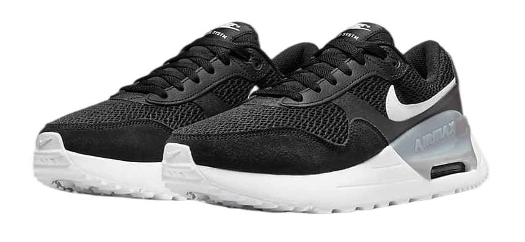

Nike Air Max SYSTM
Looks Max. Feels Max. The Air Max SYSTM brings back everything you love about your favourite '80s vibes (without the parachute trousers). Tried-and-tested visible Nike Air cushioning is paired with a sleek, sport-inspired upper. It's Air Max delivering again.
